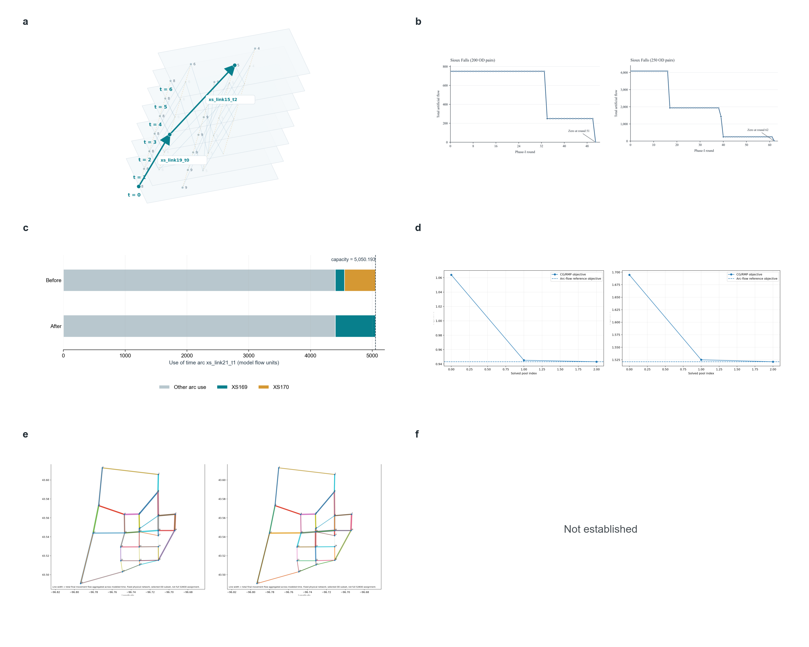
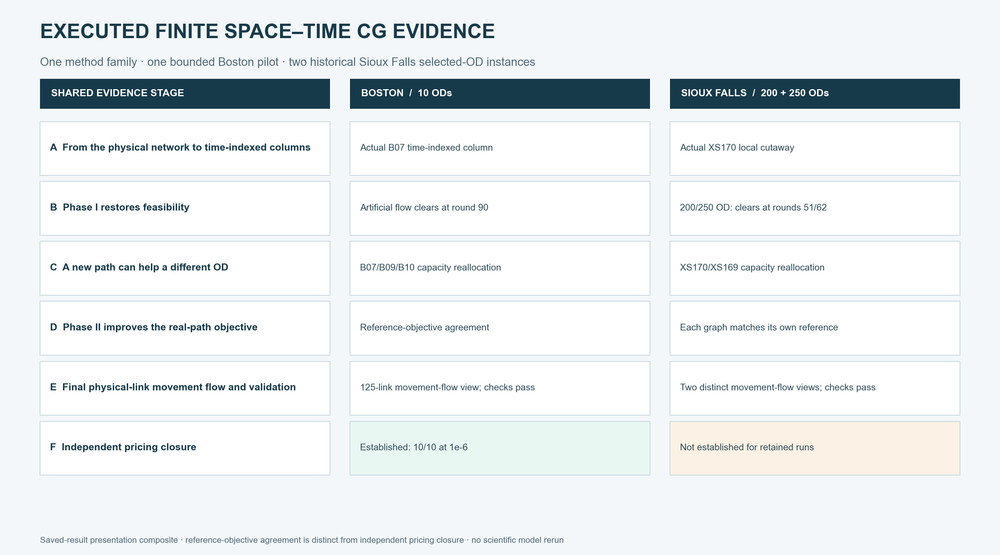

Documentation / Visual results: four stages, observations, static assignment and CG
Visual results: four stages, observations, static assignment and CG
This gallery links saved-result figures for Boston and Sioux Falls. It does not rerun optimization or invent observations. Common finite space–time CG figure families use the same terminology and reading order in both cases; city-specific supplementary figures remain available and are not removed.
Central Boston: demand, observations and static assignment
The four-stage walkthrough links actual data to each stage. Generation, OD distribution, mode response and road assignment have separate result figures. The GPS feedback explains where observations enter; the original five-map gallery remains available as spatial context and saved outputs.
Case-parallel finite space–time CG figure families
| Shared figure family | Boston | Sioux Falls |
|---|---|---|
| From the physical network to time-indexed columns | Actual B07 physical-to-time cutaway | Actual XS170 local cutaway |
| Phase I restores feasibility | Total and B01–B10 artificial-flow clearance | 200/250-OD total and OD-level clearance |
| A new path can help a different OD | B07/B09/B10 shared-capacity event | XS170/XS169 shared-capacity event |
| Phase II improves the real-path objective | Boston Phase-II objective and reference | 200/250-OD Phase-II objectives and references |
| Final physical-link movement flow and validation | Boston final flow and audit | 200/250-OD final flow and audit |
| Independent pricing closure | Established for 10/10 demands | Not established for the retained historical runs |
Both cases have matching six-panel saved-result figures with identical canvas and panel order. The figures use restrained panel letters; explanations and limits sit in the case-page captions rather than in title cards inside the images:
| Boston · one bounded pilot | Sioux Falls · two historical selected-OD benchmarks |
|---|---|
 |  |
{kind=link}
Display crops retain the plotted curves, axes, maps and time-network geometry while moving explanatory prose outside the composite; the complete originals remain linked in the case pages. No optimizer, pricing routine, demand model or map-matching routine was rerun. Exact source hashes, crop coordinates and no-solve renderer · Boston SVG · Sioux Falls SVG.
{kind=link}
{kind=link}
Executed finite space–time CG at a glance

This compact overview uses the canonical six-stage vocabulary without repeating the detailed case panels. No optimizer or pricing oracle was rerun. Boston is one bounded real-city pilot with independent pricing closure for 10/10 demands. Sioux Falls retains separate 200-OD and 250-OD historical selected-OD benchmarks with reference-objective agreement on their own finite time-expanded graphs; independent pricing closure is not established for those runs. Current SVG · Current source hashes · Earlier saved overview and its source manifest.
{kind=link}
{kind=link}
Boston bounded CG figure family
| Single-pilot summary | Physical-to-space–time construction |
|---|---|
 |  |
| Phase-I feasibility restoration | Phase-II objective and reference |
 |  |
| R4 continuation | Independent by-demand pricing closure |
 |  |
The remaining Boston counterparts—final physical-link flow, OD-level Phase-I clearance, shared-capacity event and final validation—are collected on the full Boston CG case page.
Scope and supplementary evidence
The Boston finite space–time CG page retains the full scientific figure family: final physical-link movement flow, actual time-indexed column construction, Phase-I total and per-demand clearance, a recorded cross-OD shared-capacity event, Phase-II objective/reference, final validation and the Boston-only independent pricing-closure continuation. It is 90 physical nodes / 125 directed links / 10 ODs, not a citywide or second-scale Boston solve.
Composed summary · All source/figure hashes.
Sioux Falls historical selected-OD benchmarks
The Sioux Falls finite space–time CG page retains two distinct historical benchmark instances: 200 ODs and 250 ODs. They agree with the arc-flow LP objectives on their own selected-OD finite time-expanded graphs; independent pricing closure is not established. Boston's R4 certificate is not transferred to them.
Final physical-link movement flow
| 200 OD · 64 selected links | 250 OD · 69 selected links |
|---|---|
 |
 |
Line width encodes final movement flow aggregated across modeled time. These are schematic network views: opposite directions may overlap, and colors are not a quantitative scale. Do not read them as observed traffic, static V/C, precise road-shape GIS or a full 528-OD assignment.
Phase II improves the real-path objective
| 200 OD | 250 OD |
|---|---|
 |
 |
Each curve is compared with the arc-flow LP on its own selected-OD finite time-expanded graph. Different OD selections define different optimization instances; their objective values are not directly comparable as an algorithmic improvement measure.
Phase I restores feasibility
| 200 OD | 250 OD |
|---|---|
 |
 |
Artificial flow is an algorithmic feasibility device, not an observed queue or discarded real demand. Its progression belongs to the successful solve and is retained for interpretation.
Data cards and numerical scope
The 200-OD record and 250-OD record explain saved versus uniquely reconstructed final path flows, objective checks and remaining certificate boundaries. Full raw inputs and reconstruction evidence are not redistributed here. The static FW record is a separate static model, not another point on these CG curves.